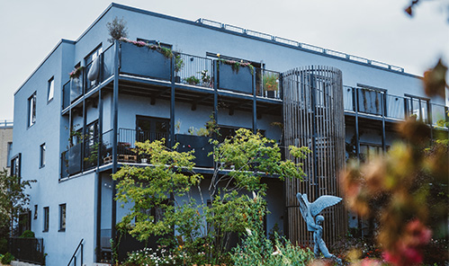

연혁
1980
- - 한국조류협회 창립
- - 서울특별시장 표창장 (제3291호)
- - 대통령 표창장 (제63246호)
- - 한국조류보호협회 개칭
- - 내무부장관 단체 표창장 (제2990호)
1990

- - 산림청장 감사패 (제198호)
- - 사회단체 (제187호 등록)
- - 야생조류진료센터 지정 (서울특별시장 위촉)
- - 국무총리 표창장 (제68786호)
- - 문화체육부장관 감사패 (제967호)
- - 국가지정문화재관리단체 지정 (문화재청 제96-1호)
- - 대통령 단체 표창장 (제97553호)
- - 사단법인 설립 (문화재청 제98-1호)
- - 서울특별시장 감사장 (제70호)
2000
- - 서울특별시 우수환경상 (단체) (제39호)
- - 문화재청장 감사패 (제76호)
- - 과학기술부장관 표창장 (제9055호)
- - 서울특별시장 표창장 (제2744호)
- - 대한민국 은관 문화훈장 수훈 (제206호)
- - 2007년 버드세이버 캠페인 시작
2010
- - 인공둥지 제작회와 협업으로 인공둥지 키트 판매
- - 파주시 겨울철새 환송행사 첫 개최
- - 자연유산 전시회 개최
- - 조계사 동안거 회향 생명살림기도
- - 천연기념물 특별전
- - 협회 창립 38주년